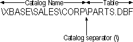
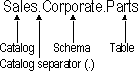
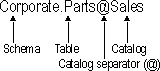

The position of a catalog name in an identifier and how it is separated from the rest of the identifier varies from data source to data source. For example, in an Xbase data source, the catalog name is a directory and, in Windows, is separated from the table name (which is a file name) by a backslash (\). The following figure illustrates this condition.

In a SQL Server data source, the catalog is a database and is separated from the schema and table names by a period (.).

In an Oracle data source, the catalog is also the database, but follows the table name and is separated from the schema and table names by an at sign (@).

To determine the catalog separator and the location of the catalog name, an application calls SQLGetInfo with the SQL_CATALOG_NAME_SEPARATOR and SQL_CATALOG_LOCATION options. Interoperable applications should construct identifiers according to these values.
When quoting identifiers that contain more than one part, applications must be careful to quote each part separately and not quote the character that separates the identifiers. For example, the following statement to select all of the rows and columns of an Xbase table quotes the catalog (\XBASE\SALES\CORP) and table (PARTS.DBF) names, but not the catalog separator (\):
SELECT * FROM "\XBASE\SALES\CORP"\"PARTS.DBF"
The following statement to select all of the rows and columns of an Oracle table quotes the catalog (Sales), schema (Corporate), and table (Parts) names, but not the catalog (@) or schema (.) separators:
SELECT * FROM "Corporate"."Parts"@"Sales"
For information about quoting identifiers, see the next section, “Quoted Identifiers.”